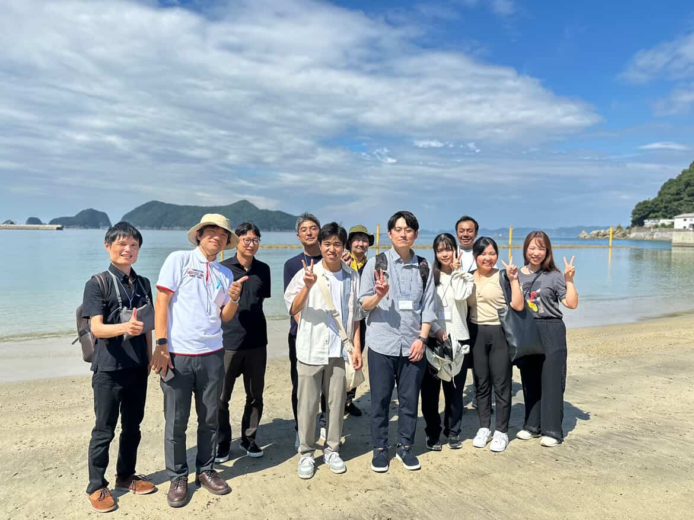
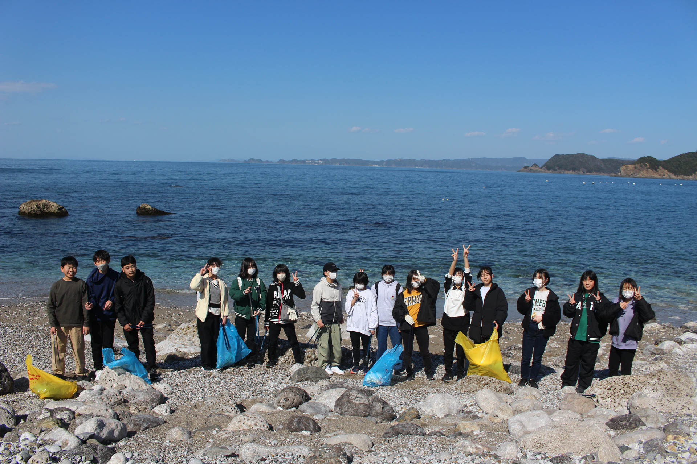
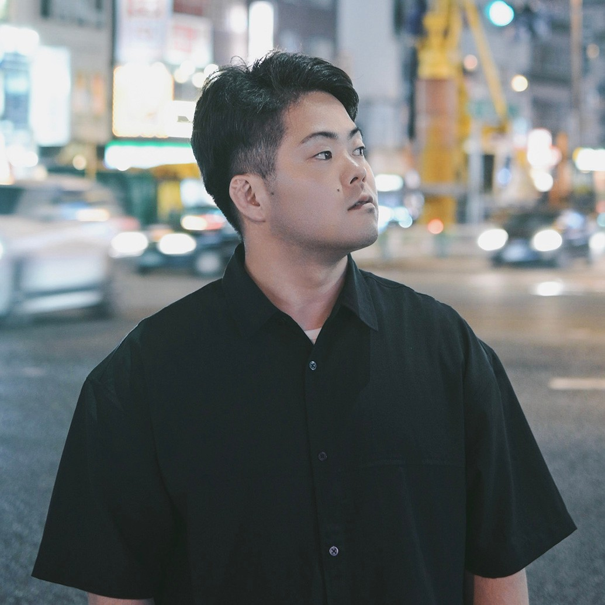

由良町星空ブランディングプロジェクト
ここには「残したい」空がある
由良町とJR西日本和歌山支社が連携した「由良町星空ブランディングプロジェクト」が立ち上がりました。 最初の取組として、町内外の方に由良町の星空を発信するフォトコンテストを開催します。
募集期間： 2026年2月1日(日) 〜 3月31日(火)
テーマ： 由良町内で撮影した「星空」に関連するもの（風景との組み合わせも可）
2つの指定ハッシュタグを付けて写真を投稿。
#由良の星空2026 #由良町
本文に「使用機種（カメラ/スマホ）」と「写真へのコメント（選んだ理由など）」を記載してください。
| 賞名 | 人数 | 副賞 |
|---|---|---|
| 最優秀賞 | 1名 | 由良町絶景パッケージツアー ペアチケット（お食事券、e-Bike、白崎クルーズ等） |
| スマホ賞 | 1名 | 町内旅館 お食事券（7,000円分） |
| ジュニアリーダー賞 | 1名 | くら寿司 お食事券（5,000円分） |
| 佳作 | 4名 | ゆらの助セット（理研ビタミン提供商品 1,000円相当 ＋ ゆらの助タオル） |

由良町役場およびプロジェクト関係者で構成される運営チームです。 単なる美しさだけでなく、その写真から伝わる「地域の魅力」や「撮影者の想い」、そして作品に込められた「ストーリー」を何よりも重視。地域の日常にある輝きや、地元の人さえ気づかなかった新しい由良の表情に出会えることを楽しみにしています。

本賞の審査を担当するのは、町内在住の小学6年生から中学3年生までのメンバーで構成される「ジュニアリーダークラブ」です。
次世代の地域リーダーを目指す彼らは、子ども会活動や地域貢献、様々な体験学習を通じて、豊かな社会性とコミュニケーション能力を育んでいます。
地域の魅力を肌で感じ、未来のまちづくりを担う若きリーダーたちが、独自の感性と郷土愛を持って、心に響く「最高の一枚」を選出します。

ニュージーランドのバックパッカー旅で出会った星空を機に、写真の道へ。
星景写真家として活動している。
大阪を拠点に、和歌山をはじめ全国の星景を撮影・発信している。
自身の原点である和歌山県由良町「白崎海洋公園」では、石灰岩の異世界のような景観と360度の星空に魅了され、その魅力を広める活動を継続中。
現在は、Sony αアカデミー講師を務めるほか、共著『今夜星がみたくなる 夜空の手帳』（東京書籍）の出版、記事執筆、講演など、星景写真の普及に尽力している。
審査員による選考を行い、計5作品を選出します。
※スマホ賞・ジュニアリーダー賞は一次審査のみで確定となります。
選ばれた5作品を対象に、一般投票（SNS/現地）を実施。最も票を集めた1作品を「最優秀賞」に決定します。
2026年7月頃、公式サイトおよびSNSにて発表。入賞者には豪華副賞を贈呈します。
詳細は公式Instagramをご確認ください
Instagram公式アカウントを見る